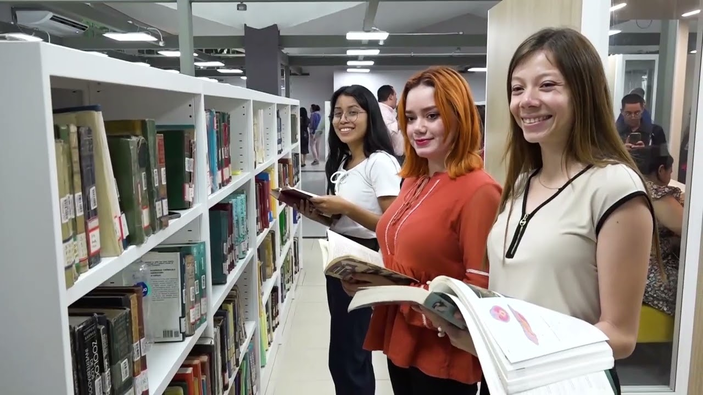

Carreras
Descubre las carreras que te prepararán para ser un profesional líder
en el campo de la ciencia y la matemática. Cada plan de estudios está
diseñado para fomentar el pensamiento crítico y la innovación.

Licenciatura en Matemática
Forma profesionales con una sólida base en las diversas áreas de la
matemática, capaces de resolver problemas complejos, modelar
situaciones reales y contribuir a la investigación científica.
- Duración: 5 años
- Modalidad: Presencial
- Título a otorgar: Licenciado/a en Matemática
Licenciatura en Física
Prepara científicos con un profundo conocimiento de las leyes que
rigen el universo, desde las partículas subatómicas hasta las
galaxias. Nuestros graduados trabajan en investigación, tecnología y
docencia.
- Duración: 5 años
- Modalidad: Presencial
- Título a otorgar: Licenciado/a en Física
Profesorado en Ciencias Naturales
Diseñada para formar educadores apasionados por la ciencia, con las
herramientas pedagógicas y el conocimiento disciplinario para
inspirar a las futuras generaciones en la educación básica y media.
- Duración: 4 años
- Modalidad: Semipresencial
- Título a otorgar: Profesor/a en Ciencias Naturales